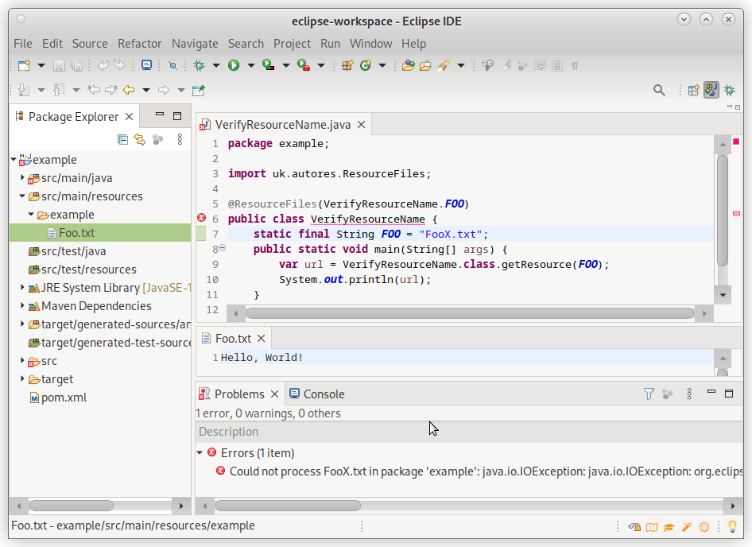
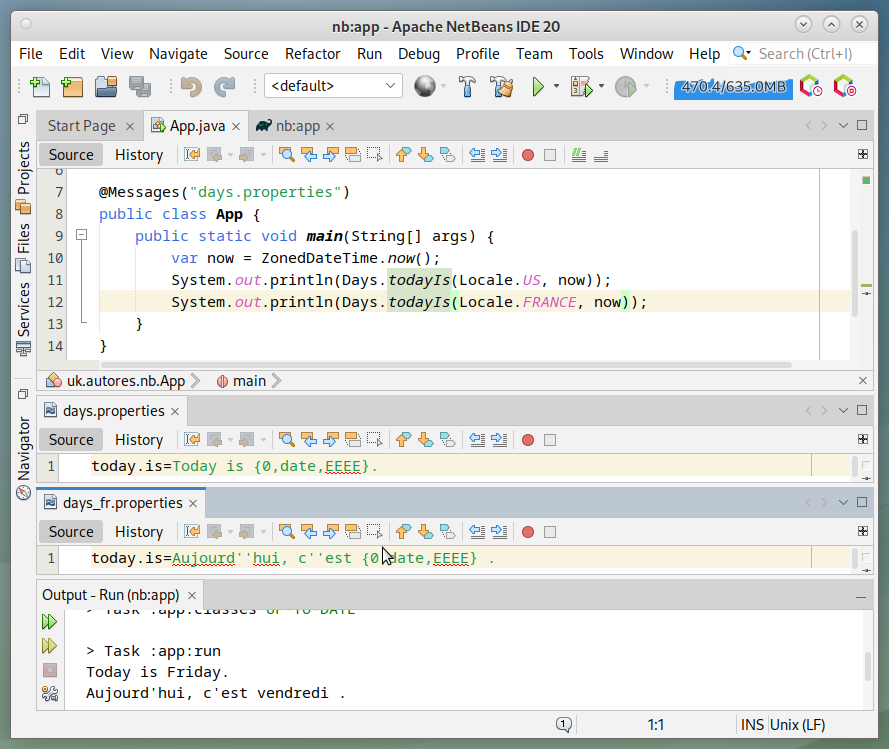
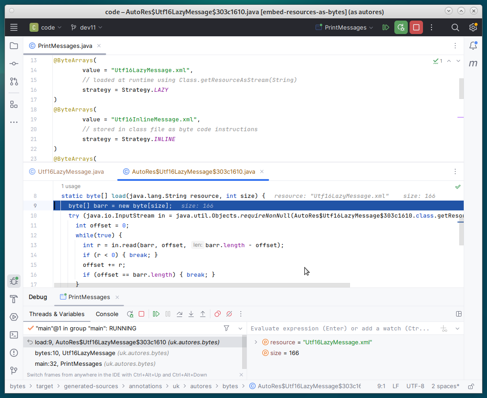

AutoRes.uk Screenshots
These screenshots give some indication of the developer experience.
Error Handling

Screenshot from Eclipse with a Maven project.
There is a typo in the resource name which generates a compile-time error.
Using Generated Code

Screenshot from Netbeans with a Gradle project.
Locale sensitive strings are resolved by code generated from properties files.
Debugging Generated Code

Screenshot from IntelliJ IDEA with a Maven project.
Generated code is human readable enabling step through debugging to resolve problems.